Output Shaft
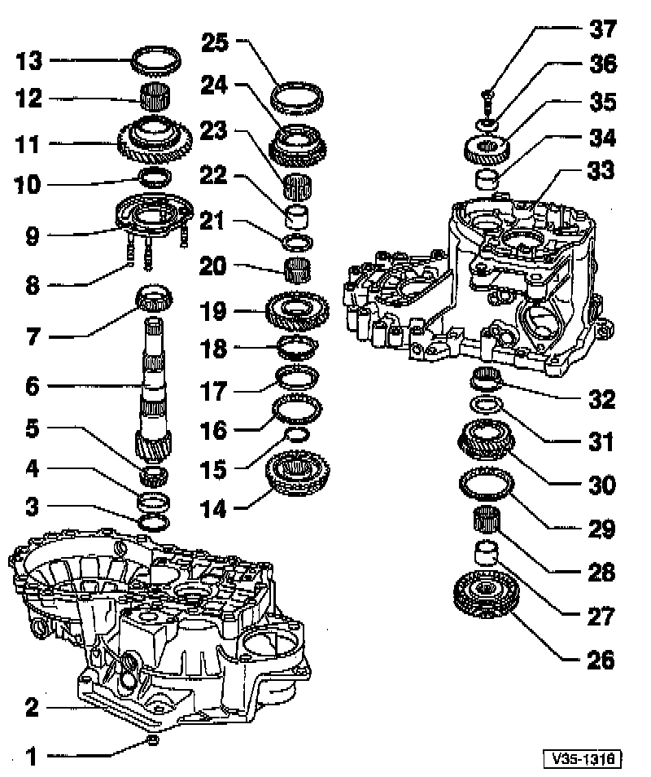
COMPONENT NOTES AND INFORMATION
NOTE: Both tapered roller bearings must be replaced together, as a set.
1 Hex nut
- Tighten to:25 Nm (18 ft lb), plus additional 90° (1/4-turn)
- For bearing support -9-
- Quantity: 4
2 Clutch housing
3 Shim
- Determining thickness. Adjustments
4 Small tapered roller bearing outer race
- Removing, refer to Fig. 1, below.
- Pressing in, refer to Fig. 2, below.
5 Small tapered roller bearing inner race
- Pulling off, refer to Fig. 3, below.
- Pressing on, refer to Fig. 4, below.
6 Output shaft
- Paired with final drive gear (differential ring gear); always replace as a set
- Adjusting, refer to page 35-43
7 Large tapered roller bearing inner race
- Pulling off, refer to Fig. 7, below.
- Pressing on, refer to Fig. 8, below.
8 Sealing rings
- Install on bolts for bearing support -9-
- Quantity: 4
9 Bearing support
- With large tapered roller bearing outer race and bolts.
- Only replace outer race together with large tapered roller bearing and bearing support
10 Thrust washer
- Shoulder on thrust washer faces tapered roller bearing
11 1st gear
12 Needle roller bearing
- For 1st gear
13 1st gear synchronizer ring (synchro-ring)
- Checking for wear, refer to Fig. 9, below.
- Identification, refer to Fig. 14, below.
14 1st/2nd gear operating sleeve with synchronizer hub (synchro-hub)
- Removing:
Remove circlip -15-
Pull off operating sleeve/synchro-hub assembly using bearing support, refer to Fig. 6, below.
- Disassembling, refer to Fig. 10, below.
- Assembling operating sleeve and synchro-hub, refer to Figs. 10 and 11, below.
- Installed position, refer to Fig. 12, below.
- Installing, refer to Fig. 13, below.
15 Circlip
16 2nd gear synchronizer ring (synchro-ring)
- Identification, refer to Fig. 14, below.
- Checking for wear, refer to Fig. 16, below.
- Assemble so that recesses engage locking lugs on operating sleeve -14-
17 2nd gear synchronizer outer ring
- Engage in 2nd gear synchro-ring -16-
- Installation position, refer to Fig. 17, below.
- Replace if scored
18 2nd gear synchronizer inner ring
- Checking for wear, refer to Fig. 18, below.
- Check lugs for scoring
- Installed position, refer to Fig. 19, below.
19 2nd gear
- Installation position, refer to Fig. 20, below.
20 Needle roller bearing
- For 2nd gear
21 Thrust washer
22 Sleeve For 3rd gear (3GR) needle roller bearing
- Pressing off with 2nd gear, refer to Fig. 5, below.
- Pressing on, refer to Fig. 21, below.
23 Needle roller bearing
- For 3rd gear (3GR)
24 3rd gear (3GR)
25 3rd gear (3GR) synchronizer ring (synchro-ring)
- Checking for wear, refer to Fig. 9, below.
26 Operating sleeve with synchronizer hub (synchro-hub)
- For 3rd gear (3GR)/ 4th gear (4GR)
- Press off with 2nd gear -19- and 3rd gear (3GR) -24-
- Disassembling, refer to Fig. 22, below.
- Installation position for synchro-hub and operating sleeve, refer to Fig. 24, below.
- Assembling synchro-hub and operating sleeve, refer to Figs. 22 and 23, below.
- Pressing on, refer to Fig. 25, below.
27 Sleeve
- For needle roller bearing
- Press off with operating sleeve and 3rd gear (3GR)/4th gear (4GR) synchro-hub, refer to Fig. 5, below.
- Pressing on, refer to Fig. 26, below.
28 Needle roller bearing
- For 4th gear (4GR)
29 4th gear (4GR) synchronizer ring (synchro-ring)
- Checking for wear, refer to Fig. 9, below.
30 4th gear (4GR)
31 Thrust washer
32 Needle roller bearing
- For output shaft
- Removing/installing, refer to Input/Output Shaft, Differential and Shift Forks Remove/Install.
33 Transmission housing
34 Sleeve
- For output shaft needle roller bearing
- Pressing off, refer to Fig. 5, below.
- Pressing on, refer to Fig. 27, below.
35 5th gear
- Removing/installing, refer to Input/Output Shaft, Differential and Shift Forks Remove/Install.
36 Belleville spring washer
- Installation position, refer to Input/Output Shaft, Differential and Shift Forks Remove/Install.
37 Torx socket-head bolt 10 mm
- Tighten to:: 80 Nm (59 ft lb)
PROCEDURES
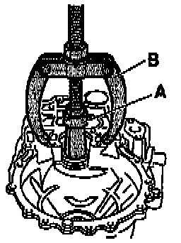
Fig. 1 Pulling off small tapered roller bearing outer race
A - Internal extractor: 37~6 mm e.g. US 1099 or Kukko 21/6
B - Counter support e.g. US 1032 or Kukko 22/2
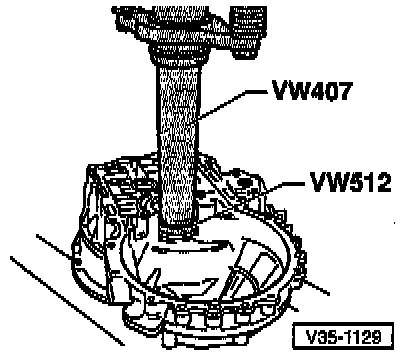
Fig. 2 Pressing in small tapered roller bearing outer race

Fig. 3 Pulling off small tapered roller bearing inner race
A - Protective jaws for vise
- Install puller and tighten into position well behind rollers of bearing.
- Turn bearing and re-tighten puller.

Fig. 4 Pressing on small tapered roller bearing inner race

Fig. 5 Pressing off 3rd gear (3GR)/4th gear (4GR) synchro-hub with operating sleeve, 2nd gear, 3rd gear (3GR) and 4th gear (4GR) with transmission housing needle roller bearing sleeve
A - Separator, 22 to 115 mm e.g. Kukko 17/2
B - 17 mm hex-head bolt (10 x 20 mm)
NOTE: Support the separator tool so that the 1st/2nd gear operating sleeve stays in position and is NOT pulled off.

Fig. 6 Pulling off operating sleeve with synchro-hub using bearing support
A - Two arm puller, e.g US 1078 or Kukko 20/10, and hooks with 250 mm reach, e.g. US 1079
B - 17 mm hex-head bolt (10 x 20 mm)
NOTE: Remove circlip before pulling off individual components.
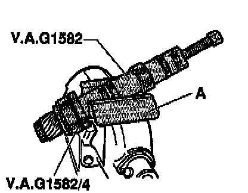
Fig. 7 Pulling off large tapered roller bearing inner race
A - Protective jaws for vise
NOTE: Before installing the puller, insert a 10 x 20 mm hex bolt in threaded hole of the output shaft.
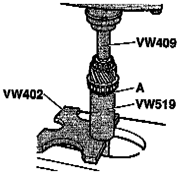
Fig. 8 Pressing on large tapered roller bearing inner race
A - Thrust washer
- Install thrust washer before pressing on inner race
- Shoulder faces inner race

Fig. 9 Checking synchro-ring for wear
- Press synchro-ring onto gear and measure gap -a- with feeler gauge.
1st gear Gap -a-
New: 1.0-1.7 mm (0.039 0.067 inch)
Wear limit: 0.5 mm (0.020 inch)
3rd gear (3GR) Gap -a-
New: 1.0-1.7 mm (0.039 0.067 inch)
Wear limit: 0.5 mm (0.020 inch)
4th gear (4GR) Gap -a-
New: 1.0-1.7 mm (0.039 0.067 inch)
Wear limit: 0.5 mm (0.020 inch)
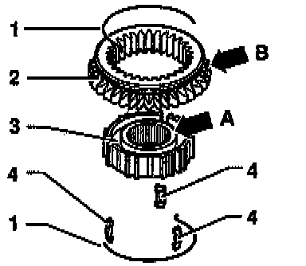
Fig. 10 Disassembling and assembling 1st/2nd gear operating sleeve and synchro-hub
1 - Spring
2 - Operating sleeve
3 - Synchro-hub
4 - Locking piece
- Press operating sleeve over synchro-hub.
After assembly, wider shoulder of synchro-hub (arrow -A-) and outer splines of operating sleeve (arrow -B-) face in opposite directions
Recesses for locking pieces, in synchro-hub and in operating sleeve, must be aligned
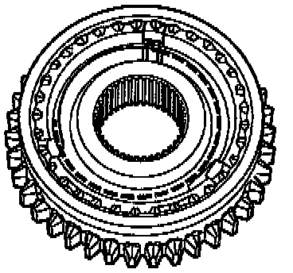
Fig. 11 Assembling 1st/2nd gear operating sleeve and synchro-hub
- Operating sleeve pressed over synchro-hub
- Insert locking pieces and install springs.
Spring ends must be offset by 120°
Bent end of spring must engage in locking piece
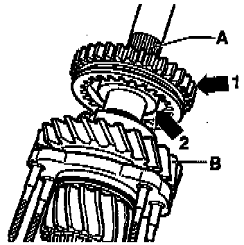
Fig. 12 Installation position of 1st/2nd gear operating sleeve/synchro-hub
- Splines on operating sleeve (arrow -1-) face toward splines for 3rd gear (3GR)/4th gear (4GR) synchro-hub -A-.
- Wide shoulder of synchro-hub (arrow -2-) faces toward 1st gear -B

Fig. 13 Pressing on 1st/2nd gear synchro-hub with operating sleeve
NOTE: Before pressing on, place 1st gear synchro-ring onto 1st gear.

Fig. 14 Identification of 1st and 2nd gear synchro-rings
- 1st gear synchro-ring has 3 ground-down half teeth (-arrow-)
- 2nd gear synchro-ring has 2 or 3 ground-down half teeth (-arrow-)
- Only the 2nd gear synchro-ring with 2 ground-down half teeth is available as a spare part.
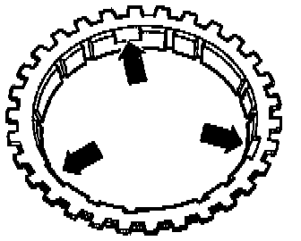
Fig. 15 Identification of 1st and 2nd gear synchro-rings
- 1st gear synchro-ring: no recesses
- 2nd gear synchro-ring: three recesses (-arrows-)

Fig. 16 Checking 2nd gear synchro-ring for wear
- Press synchro-ring, outer ring and inner ring onto cone of 2nd gear.
- Measure gap -a- with feeler gauge.
2nd gear Gap -a
New: 1.2-1.8 mm (0.7-0.071 inch)
Wear limit: 0.5 mm (0.020 inch)
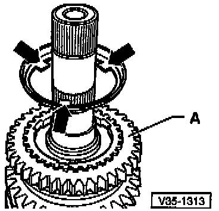
Fig. 17 Installation position for outer ring
- Lugs (-arrows-) face toward 1st gear -A

Fig. 18 Checking synchronizer inner ring for wear
- Press inner ring onto cone of 2nd gear.
- Measure gap -a- with feeler gauge.
2nd gear Gap -a-:
New: 0.75-1.25 mm (0.030-0.049 inch)
Wear limit: 0.3 mm (0.012 inch)

Fig. 19 Installation position for synchronizer inner ring -A-
- Lugs (arrows -1-) engage in recesses (arrows -2-) of synchro- ring -B

Fig. 20 Installation position for 2nd gear
- High shoulder-A- faces toward 1st gear -B
- Recesses in shoulder (-arrows-) engage in lugs of outer ring (arrows in Fig. 17, above)

Fig. 21 Pressing on sleeve for 3rd gear (3GR) needle roller bearing
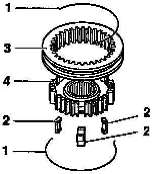
Fig. 22 Disassembling and assembling 3rd gear (3GR) and 4th gear (4GR) operating sleeve and synchro-hub
1 - Spring
2 - Locking piece
3 - Operating sleeve
4 - Synchro-hub
- Slide operating sleeve over synchro-hub.
- Recesses for locking pieces, in synchro-hub and in operating sleeve, must be aligned
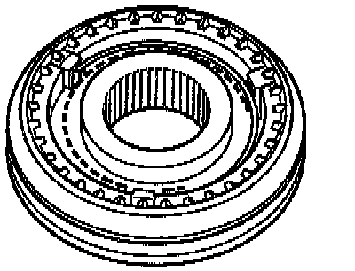
Fig. 23 Assembling 3rd gear (3GR) and 4th gear (4GR) operating sleeve and synchro-hub
- Operating sleeve installed over synchro-hub
- Insert locking pieces and install springs.
- Spring ends must be offset by 120°
- Bent end of spring must engage in locking piece

Fig. 24 Installation position of 3rd gear (3GR)/4th gear (4GR) operating sleeve/synchro-hub
- Chamfer (-arrow-) faces toward 4th gear (4GR)
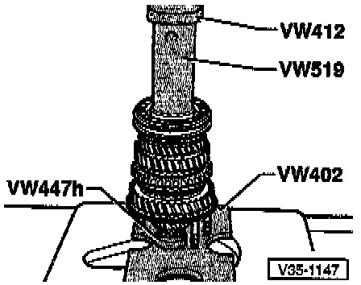
Fig. 25 Pressing on 3rd gear (3GR)/4th gear (4GR) synchro-hub with operating sleeve
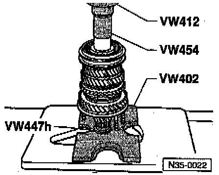
Fig. 26 Pressing on sleeve for 4th gear (4GR) needle roller bearing
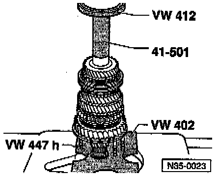
Fig. 27 Pressing on sleeve for Output shaft needle roller bearing